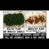

<!DOCTYPE html>
<html lang="en">
 <head>
<!-- Favicon -->
<link rel="shortcut icon" href="../../favicon.ico">
  <meta charset="utf-8"/>
  <title>
   Cell Tower Radiation Prevents Garden Cress Seed Germination in Danish Experiment
  </title>
  <meta content="Post on /v/Conspiracy from 2016-01-02 by unixfreak." name="description"/>
  <meta content="Cell Tower Radiation Prevents Garden Cress Seed Germination in Danish Experiment" property="og:title"/>
  <meta content="Post on /v/Conspiracy from 2016-01-02 by unixfreak." property="og:description"/>
  <link href="../../static/css/page.css" rel="stylesheet"/>
  <meta content="https://voat.conspiracy.hackliberty.org/thumbnails/e9/c3/e9c326a3-90b6-4636-aaad-7e53f67800c2.jpg" property="og:image"/>
  <meta content="https://voat.conspiracy.hackliberty.org/v/conspiracy/762117.html" property="og:url"/>
  <meta content="width=device-width, initial-scale=1" name="viewport"/>
  <link href="https://voat.conspiracy.hackliberty.org/v/conspiracy/762117.html" rel="canonical"/>
  <meta content="article" property="og:type"/>
  <meta content="Voat /v/Conspiracy Archive" property="og:site_name"/>
  <meta content="en_US" property="og:locale"/>
  <meta content="summary_large_image" name="twitter:card"/>
  <meta content="Cell Tower Radiation Prevents Garden Cress Seed Germination in Danish Experiment" name="twitter:title"/>
  <meta content="Post on /v/Conspiracy from 2016-01-02 by unixfreak." name="twitter:description"/>
  <meta content="https://voat.conspiracy.hackliberty.org/thumbnails/e9/c3/e9c326a3-90b6-4636-aaad-7e53f67800c2.jpg" name="twitter:image"/>
 </head>
</html>
<body class="dark">
 <header>
  <nav class="navbar navbar-dark bg-primary">
    <a class="navbar-brand" href="../../index.html">/v/Conspiracy Archive</a>
    <div class="navbar-collapse">
      <ul class="navbar-nav">
        <li class="nav-item">
          <a class="nav-link" href="../../date/page-1.html">Date</a>
        </li>
        <li class="nav-item">
          <a class="nav-link" href="../../comments/page-1.html">Comments</a>
        </li>
        <li class="nav-item">
          <a class="nav-link" href="../../search.html">Search</a>
        </li>
        <li class="nav-item dropdown">
          <a class="nav-link dropdown-toggle" href="#" id="navbarDropdown" role="button" 
             data-toggle="dropdown" aria-haspopup="true" aria-expanded="false">
            subreddits
          </a>
          <div class="dropdown-menu" aria-labelledby="navbarDropdown">
            <a class="dropdown-item" href="https://reddit.conspiracy.hackliberty.org">r/conspiracy</a>
            <a class="dropdown-item" href="https://reddit.pizzagate.hackliberty.org">r/pizzagate</a>
            <a class="dropdown-item" href="https://voat.conspiracy.hackliberty.org">v/conspiracy</a>
            <a class="dropdown-item" href="https://voat.pizzagate.hackliberty.org">v/pizzagate</a>
          </div>
        </li>
      </ul>
    </div>
  </nav>
</header>

 <div id="container">
  <!-- array (
  'submissionid' => 762117,
  'creationDate' => '2016-01-02 20:32:25',
  'domain' => 'activistpost.com',
  'formattedContent' => NULL,
  'isAdult' => 0,
  'isAnonymized' => 0,
  'subverse' => 'Conspiracy',
  'thumbnail' => 'e9c326a3-90b6-4636-aaad-7e53f67800c2.jpg',
  'title' => 'Cell Tower Radiation Prevents Garden Cress Seed Germination in Danish Experiment',
  'url' => 'http://www.activistpost.com/2016/01/cell-tower-radiation-prevents-garden-cress-seed-germination-in-danish-experiment.html',
  'userName' => 'unixfreak',
  'archivedLink' => NULL,
  'archivedDomain' => NULL,
  'isDeleted' => 0,
) --><div class="content" role="main">
   <div class="sitetable linklisting" id="siteTable">
    <div class="submission id-762117 link type-text" id="submission-762117">
     <a name="submissionTop">
     </a>
     <p class="parent">
     </p>
     <a class="thumbnail may-blank" href="http://www.activistpost.com/2016/01/cell-tower-radiation-prevents-garden-cress-seed-germination-in-danish-experiment.html" target="_self">
      
     </a>
     <div class="entry unvoted">
      <p class="title">
       <a class="title may-blank" href="http://www.activistpost.com/2016/01/cell-tower-radiation-prevents-garden-cress-seed-germination-in-danish-experiment.html" tabindex="1" target="_self" title="Cell Tower Radiation Prevents Garden Cress Seed Germination in Danish Experiment">
        Cell Tower Radiation Prevents Garden Cress Seed Germination in Danish Experiment
       </a>
       <span class="domain">
        (
        <a href="https://archive.searchvoat.co/search.php?d=activistpost.com">
         activistpost.com
        </a>
        )
       </span>
      </p>
      <p class="tagline">
       submitted
       <time datetime="2016-01-02T20:32:25+00:00" title="01/02/2016 8:32:25 PM">
        2016-01-02T20:32
       </time>
       by
       <span class="userattrs">
        <a class="author may-blank" href="https://archive.searchvoat.co/search.php?u=unixfreak">
         unixfreak
        </a>
       </span>
      </p>
      <ul class="flat-list buttons">
       <li class="first">
        <a class="comments may-blank" href="https://archive.searchvoat.co/v/Conspiracy/762117" rel="nofollow">
         3 comments
        </a>
       </li>
      </ul>
     </div>
     <div class="child">
     </div>
     <div class="clearleft">
     </div>
    </div>
    <div class="clearleft">
    </div>
   </div>
   <div class="horizontal-line">
   </div>
   <div class="commentarea">
    <div class="sitetable nestedlisting" id="siteTable">
     <div class="child id-3748421 comment even" style="">
      <div class="entry unvoted">
       <div class="noncollapsed" id="3748421" style=";">
        <p class="tagline">
         <a class="author may-blank" href="https://archive.searchvoat.co/search.php?u=luckyguy">
          luckyguy
         </a>
         <span class="userattrs">
         </span>
         <time datetime="2016-01-02T20:41:38+00:00" title="1/2/2016 8:41:38 PM">
          2016-01-02T20:41
         </time>
        </p>
        <div class="usertext-body may-blank-within" id="commentContent-3748421">
         <div class="md">
          <p>
           <p>
            What do stingrays have to do with it?  Are they any more dangerous or is that just pandering?
           </p>
           <p>
            Somebody stick a gerbel on top of a wifi router.  We need to know and that will be much more effective than germination studies.
           </p>
          </p>
         </div>
        </div>
        <ul class="flat-list buttons">
         <li class="first">
          <a class="bylink" href="https://archive.searchvoat.co/v/Conspiracy/762117/3748421" rel="nofollow">
           link
          </a>
         </li>
        </ul>
       </div>
      </div>
      <div class="child id-3748544 comment odd" style="">
       <div class="entry unvoted">
        <div class="noncollapsed" id="3748544" style=";">
         <p class="tagline">
          <a class="author may-blank" href="https://archive.searchvoat.co/search.php?u=unixfreak">
           unixfreak
          </a>
          <span class="userattrs">
          </span>
          <time datetime="2016-01-02T20:55:08+00:00" title="1/2/2016 8:55:08 PM">
           2016-01-02T20:55
          </time>
         </p>
         <div class="usertext-body may-blank-within" id="commentContent-3748544">
          <div class="md">
           <p>
            <p>
             I think the stingray reference is merely pointing out that cell towers can be more widespread, hence you'll have multiple cell towers covering a small area, and ending up with a more concentrated dose (i'm unsure about that however). The point is that radiation emitted by microwave, might be damaging on the cellular level which these studies claim that it is. The simpler the lifeform (eg; cress) the more effect microwave radiation has at damaging the cells. For instance, prolonged use of microwave radiation could be causing a myriad of illnesses in the long term, cancer being the obvious one to point at. This is the main claim to the dangers of microwave radiation.
            </p>
            <p>
             Sticking a gerbel on top of a wifi hotspot won't do much for the gerbel. I would assume the affects would be seen within a generation or two, such as mutations in dna. With a lifeform such as cress, there are less cells in terms of mass, so it's likely more cells will die IF microwave radiation is a factor towards the lack of germination.
            </p>
           </p>
          </div>
         </div>
         <ul class="flat-list buttons">
          <li class="first">
           <a class="bylink" href="https://archive.searchvoat.co/v/Conspiracy/762117/3748544" rel="nofollow">
            link
           </a>
          </li>
         </ul>
        </div>
       </div>
       <div class="child id-3749169 comment even" style="">
        <div class="entry unvoted">
         <div class="noncollapsed" id="3749169" style=";">
          <p class="tagline">
           <a class="author may-blank" href="https://archive.searchvoat.co/search.php?u=luckyguy">
            luckyguy
           </a>
           <span class="userattrs">
           </span>
           <time datetime="2016-01-02T21:59:21+00:00" title="1/2/2016 9:59:21 PM">
            2016-01-02T21:59
           </time>
          </p>
          <div class="usertext-body may-blank-within" id="commentContent-3749169">
           <div class="md">
            <p>
             <p>
              Microwaves are not going to mutate dna.  They don't have enough energy to break any bond in the dna strand.  Energy is quantized.  One quanta of microwave will not have a chemical effect.
             </p>
             <p>
              I think a better way of thinking about it is that microwave has a thermal effect on the outer skin of an organism (which is a valid concern) and cress has less volume to surface.
             </p>
             <p>
              If there is a negative effect it should be seen in one generation.  It may in fact be dangerous for it.  That's why I'm saying do it.  Let's find out.
             </p>
            </p>
           </div>
          </div>
          <ul class="flat-list buttons">
           <li class="first">
            <a class="bylink" href="https://archive.searchvoat.co/v/Conspiracy/762117/3749169" rel="nofollow">
             link
            </a>
           </li>
          </ul>
         </div>
        </div>
       </div>
      </div>
     </div>
    </div>
   </div>
  </div>
 </div>
<!-- Footer Section -->
<footer class="container-fluid mt-3">
  <p class="small mb-0">
    /v/conspiracy archive has 42504 posts and 159856 total comments.
    <a href="https://git.hackliberty.org/c0mmando/voat-conspiracy-archive/">source code</a>.
  </p>
</footer>

<script src="../../static/js/jquery-3.7.1.slim.min.js"></script>
<script src="../../static/js/comments-toggle.js"></script>

</body>
